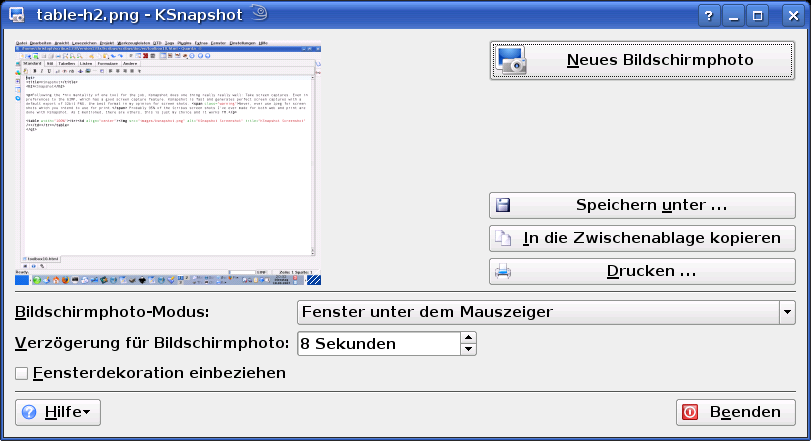

Indem es der *nix-Philosophie "Ein Werkzeug für jede Aufgabe" folgt, erledigt KSnapshot eine Aufgabe wirklich ausgezeichnet, nämlich Bildschirmschnappschüsse ("Screenshots") anzufertigen, selbst im Vergleich zu GIMP, das über eine gute und vergleichbare Funktion verfügt. KSnapshot ist schnell und erzeugt perfekte Bildschrimschnappschüsse, die standardmäßig als 32-Bit-PNG-Dateien, dem meiner Meinung nach besten Format für Aufnahmen dieser Art, gespeichert werden. Verwenden Sie niemals JPEG für Bilschirmschnappschüsse, die Sie für den Druck verwenden möchten. Für ungefähr 95% aller Schnappschüsse, die ich sowohl für das Web als auch für den Druck erzeugt habe, wurde KSnapshot verwendet. Wie gesagt, es gibt andere. Dies ist halt meine persönliche Wahl, und es funktioniert.
|  |